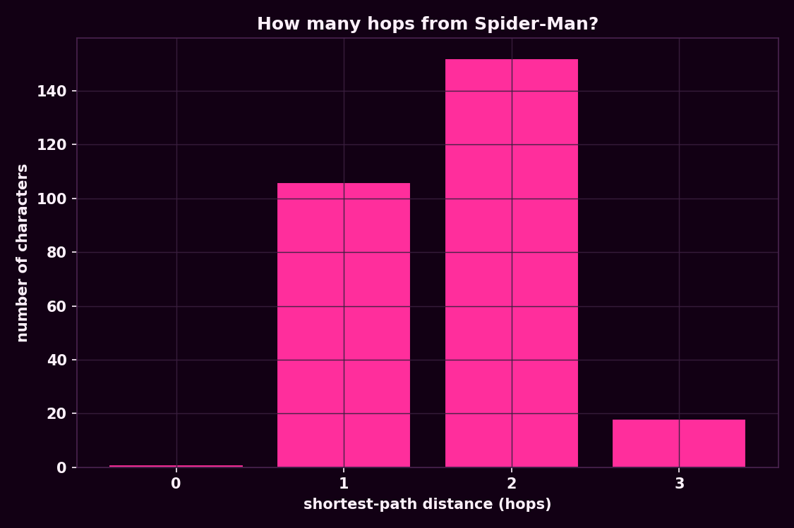
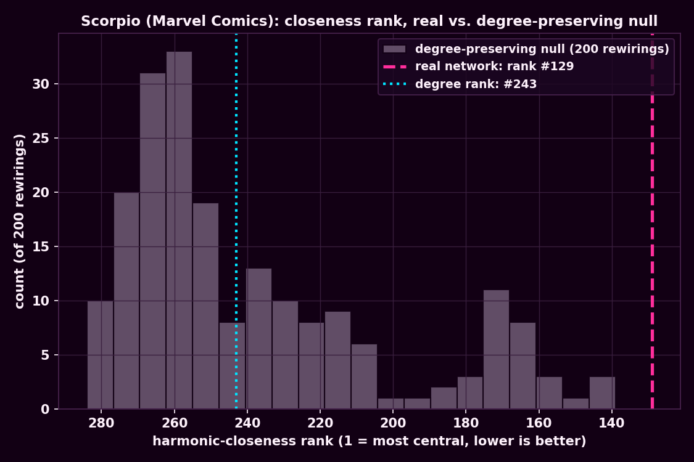
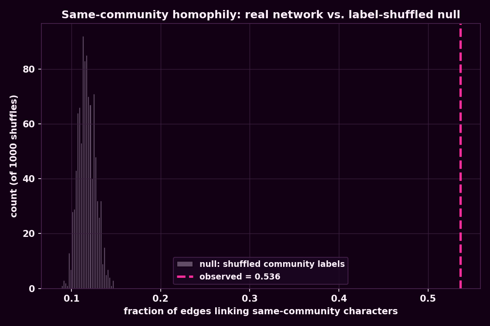
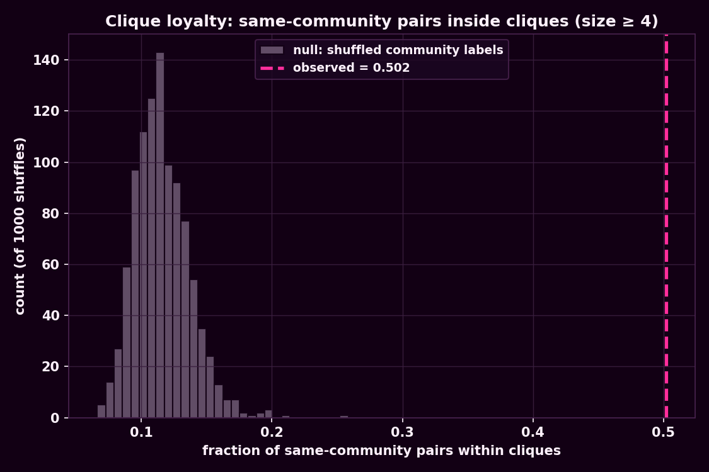

What we asked
This week's toolbox is about position, not just size: how far apart is everyone really, who sits in structurally important spots regardless of how many links they have, do characters actually cluster with their own in-universe teams, and are there tight little cliques hiding in here at all? We picked one question per tool and ran all four against the same Marvel hyperlink network from weeks 1 and 2: 303 characters, 1,434 undirected links, 277 of them in one giant component.
Tool 1 — Paths: how many hops from Spider-Man?
"Six degrees of separation" is the famous number, so we built a small tool that takes any character and reports the hop-count to everyone else, then pointed it at the network's biggest hub. The answer wasn't six. From Spider-Man, every other character in the giant component is reachable in at most 3 hops: 106 are direct links, 152 sit two hops away, and only 18 obscure characters (Kid Colt, Mahr Vehl, Skull the Slayer, and 15 others) are a full three hops out. Spider-Man's eccentricity of 3 also happens to be the graph's radius — he's the single node with the smallest possible worst-case distance to everyone else, i.e. the network's actual geometric center, not just its biggest hub.

The six-hop number does exist — it's just not measured from Spider-Man. The giant component's diameter (the longest shortest path between any two characters) is 6, achieved between five obscure periphery characters — Mahr Vehl, Mark Hazzard: Merc, Redneck, Starr the Slayer, and The Witness — sitting on the far edge from each other. Average distance across the whole component is a much tighter 2.674 hops. So "six degrees" is real, but it's the network's worst case between two nobodies, not the typical distance to its most famous node.
Tool 2 — Centrality: a two-link character that outranks its own degree
Degree tells you how connected a character looks; closeness centrality tells you how connected it is, positionally. We computed harmonic closeness centrality (it handles our 19 disconnected components gracefully, unlike plain closeness) for all 303 characters and compared the ranking to plain degree rank. The biggest gap in the whole network belongs to Scorpio (Marvel Comics): degree 2, ranked a lowly 243rd out of 303 by connection count — but 129th by harmonic closeness, jumping over 100 places. The reason is entirely about who those two links go to: Scorpio's only neighbors are Spider-Man (degree 106) and Wolverine (degree 63), the network's two biggest hubs, from two entirely different in-universe teams. Two links, chosen well, buy more reach than two dozen chosen badly.
To check this wasn't just "any degree-2 node would do this by luck," we ran a degree-preserving null model: 200 random rewirings of the network (double-edge swaps) that keep every character's degree fixed but scramble who connects to whom, then recomputed Scorpio's closeness rank each time. Under random rewiring, Scorpio's expected rank is 238th (±36) — barely better than its degree rank. The real rank of 129th sits about 3 standard deviations above that null distribution (z ≈ −3.0, since lower rank numbers mean more central). This isn't an artifact of having degree 2 in a graph like this one — it's a genuine structural fact about which two hubs Scorpio happens to bridge.

Tool 3 — Mixing: do teams actually link to their own teams?
Marvel characters come pre-labeled with an in-universe team via the community structure from week 1 (X-Men, Spider-Verse, Cosmic Avengers, and six more). Degree assortativity across the whole network is −0.098 — a mild disassortative tilt, the usual hub-and-spoke shape of wiki hyperlink networks, where big hub pages accumulate links from many small pages rather than mostly linking to each other. But the more interesting mixing question is attribute homophily: do same-team characters link to each other more than chance would predict? 53.6% of all edges connect two characters from the same team. We shuffled the team labels across nodes 1,000 times (keeping the network itself fixed) to see what same-team linkage looks like with no real team structure at all: the null average is 11.7% (±1.0%). The real network's homophily is roughly 43 standard deviations above that — not a subtle effect.

Tool 4 — Cliques: fully-connected team reunions
A maximal clique is a set of characters who all link to each other directly — no missing edges anywhere inside the group. The network has 917 maximal cliques ranging from lone isolates up to a clique number of 8. Every single one of the six largest (8-character) cliques is 100% X-Men — overlapping combinations of Wolverine, Cyclops, Jean Grey, Betsy Braddock, Rachel Summers, Northstar, Emma Frost, Jubilee, Cable, Storm and Phoenix, all mutually linked. Across all 404 cliques of size 4 or larger, 50.2% of the character pairs inside them share a team label, against a shuffled-label null of 11.6% (±2.1%) — a z-score of roughly 18. Cliques aren't just densely connected; structurally, they're almost entirely team reunions.

| Finding | Observed | Null mean | z-score |
|---|---|---|---|
| Scorpio's closeness rank (lower = more central) | 129 | 238 (±36) | −3.0 |
| Same-team edge fraction (mixing) | 53.6% | 11.7% (±1.0%) | 43.0 |
| Same-team pair fraction inside cliques ≥4 | 50.2% | 11.6% (±2.1%) | 18.3 |
What surprised us
The four tools kept telling the same story from different angles. Paths and centrality both point at position mattering more than raw connection count — Spider-Man is the geometric center as well as the biggest hub, and Scorpio proves two well-placed links beat two dozen random ones. Mixing and cliques both point at team loyalty being an enormous, non-negotiable organizing force in how this network was actually built — not a mild correlation but a z-score in the double-to-triple digits. None of this was visible from degree distributions alone; it took walking distances, a null-model rewiring, two label-shuffle tests, and a clique enumeration to see it.